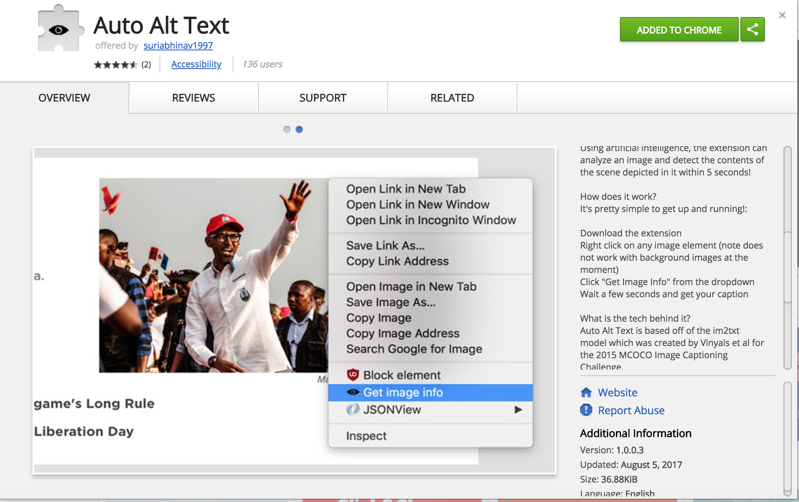
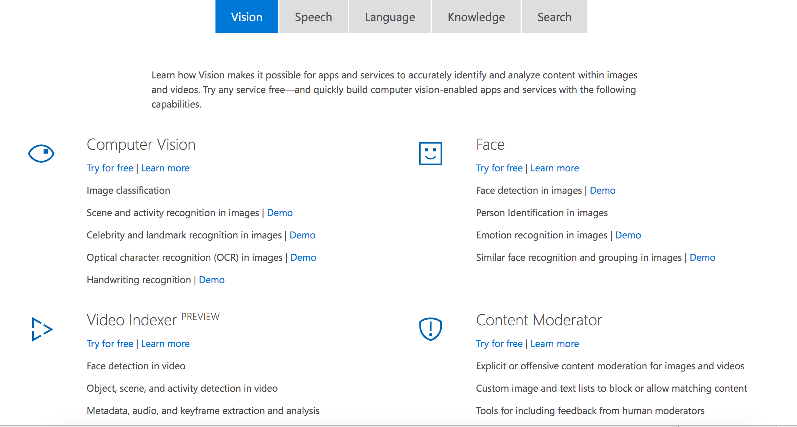
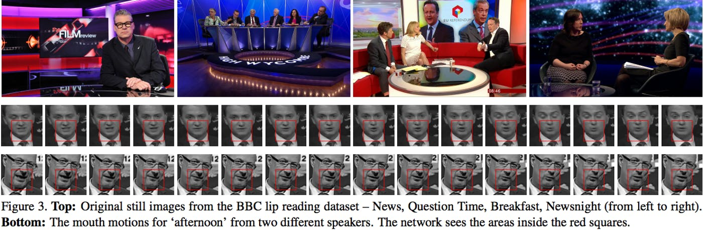
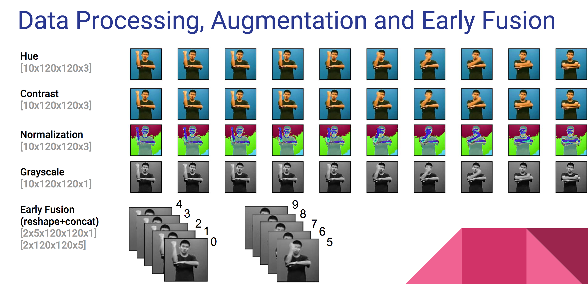

How AI can empower disabled people
Global Accessibility Awarness Day
Thursday, 17th of May 2018
By Prem Nawaz Khan / @mpnkhan
About Me

Statistics
- Assistive products: Hearing aids, wheelchairs, communication aids, spectacles, prostheses, pill organizers and memory aids .
- Globally, more than 1 billion people need 1 or more assistive products.
-
More than 2 billion people will need at least 1 assistive product by 2050,
with many older people needing 2 or more. - Today, only 1 in 10 people in need have access to assistive products.
References: World Health Organization Report , WRD Report
Artifical Intelligence can empower people with disabilities
- Voice Recognition
- Image recognition
- Facial recognition
- Lip-reading recognition
- NLP for Learners with Autism or Language Disorders
- Text to Sign Language Interpretation
Voice Recognition
Smart phones & Smart speakers - best examples of reviving AI
Apple's Siri, Amazon echo, Google Assistant, Cortana for Windows
Pros & Cons
Google Assistant, Duplex demo at Google IO May 8, 2018
Image recognition
- Since 2012, Search engine had deep learning solutions for content filtering and Image recognition
- But adding it for People with Disabilities helps the blind in recognizing images

Alternate text, biggest barrier for PWD

For websites like PayPal,
It is about educating Content editors to input alternate text in their Content Management System
(and/or)Educating Web Developers to put alt text for images
- Every day, people share more than 2 billion photos across Facebook, Instagram, Messenger, and WhatsApp
- Facebook announced their automatic alt text in April 2016
April 2017, Automatic Alt text extension for Chrome
Based on Tensor flow and im2txt Model
April 2018, Around 25 API's made available by Microsoft for public use
Image Alt text Demo
DemoFacial recognition
Using Facial recognition, we can
- Search, identify, and match faces in your private repository
- Find Similar faces
- Organize many unidentified faces together into groups, based on their visual similarity
Facial recognition
Recognizing Humans versus Bots

CAPTCHA sucks?
Examples like iPhone X Facial Unlock, Windows Hello
Facial recognition Demo
DemoLip-reading recognition
Automated captions using Lip Reading
Oxford University researchers partnered with Google on a new AI tool that reads lips, and the results were significant.

Trained with a dataset of more than 100,000 natural sentences.
NLP (Natural language processing) for Learners with Autism or Language Disorders
Helpicto is an android app which uses speech to text and Microsoft Cognitive API to convert speech a set of images which students with Language disorders related to autism, dysphasia, or Alzheimer’s disease
Cognitive API uses AI to split the sentences and sends back the intents which is converted to a list of images
The speech command is “Do you want to eat an apple?” Helpicto will then generate three images: the child himself, the action of eating, and a picture of an apple.
Text to Sign Language Interpretation
Real Time American Sign Language Video Captioning using Deep Neural Networks 
More info: Slides and NVIDIA BlogHow you can help?
As a Front End Engineer
Make use of WebRTC in detecting Eye, Hands, Face
Use Web Speech API
function synthVoice(text) {
const synth = window.speechSynthesis;
const utterance = new SpeechSynthesisUtterance();
utterance.text = text;
synth.speak(utterance);
}
SpeechRecognition API
const SpeechRecognition = window.SpeechRecognition || window.webkitSpeechRecognition;
const recognition = new SpeechRecognition();
How you can help?
As a Back End Engineer
Open source Machine Learning Frameworks
Google's Tensor flow
Microsoft Cognitive Toolkit (CNTK)
Theano
MATLAB,
Caffe and Caffe2,
Keras,
Pytorch,
MXNet,
Deeplearning4j,
NVIDIA Caffe,
Chainer,
PaddlePaddle